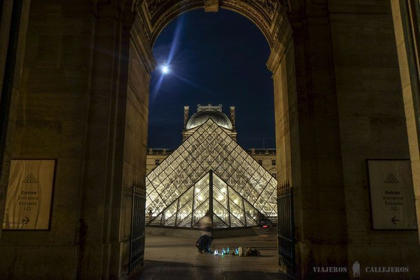
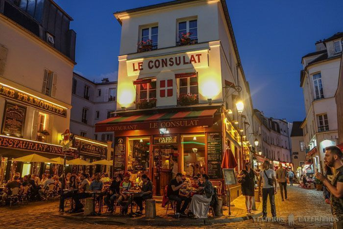

Paris
París, considerada como la ciudad más romántica del mundo y un lugar lleno de lugares encantadores, es para nosotros una de esas ciudades que debes visitar antes de morir. Pasear por la orilla del Sena, tomarte un café en alguna de sus bonitas terrazas, subir a las torres de la Catedral de Notre Dame, ver la Torre Eiffel desde Trocadero, perderte por los barrios de Montmartre o Le Marais o embriagarte de arte en el Louvre, son sólo algunos de los muchos lugares que visitar en París imprescindibles.

Miluska: La primera vez que viajé a París fue cuando tenía 15 años. No me interesaba ir, pero mis padres se habían quedado con la espinita de llevarnos a Disneyland y fuimos una semana. El viaje fue muy caro (más de 6000 euros), pero mereció la pena. Decidí ir por segunda vez a París, porque la primera vez que fuí apenas visité la ciudad en si, ya que solo contratamos un excursión que nos llevaba a la Torre Eiffel y un crucero por el sena para ver Notre Dame y poco más.
La Torre Eiffel fue creada para la Exposición Universal de París del año 1889 y aunque en un principio no gustó a los parisinos, a lo largo de los años se ha convertido en el icono de la ciudad. Sus 1.665 escalones hacen recomendable la subida en ascensor, aunque escojas la forma que escojas, lo que no puedes perderte son las vistas increíbles de la ciudad desde arriba.


La Sainte Chapelle es nuestra iglesia favorita de París y (al menos para nosotros) una de las más bonitas del mundo. Esta iglesia gótica se encuentra en la Île de la Cité y se construyó para guardar varias reliquias. Lo que más destaca son sus impresionantes vidrieras de la capilla superior, donde es difícil no quedarse boquiabierto, mientras admiras semejante maravilla.
El Louvre es uno de los mejores lugares que visitar en París, además de ser el museo más visitado del mundo. La visita puede durar de unas horas para ver lo más importante, hasta más de un día para los amantes del arte. Algunas de sus mejores obras son la famosa Gioconda de Leonardo da Vinci, la Venus de Milo o el Escriba Sentado del antiguo Egipto. Una buena opción para visitarlo es reservar esta visita guiada en español, uno de los mejores tours en París para así ahorrarte las grandes colas que se forman a la entrada y como comentábamos antes, aprovechar el tiempo al máximo en París.
Los dos kilómetros que unen la Plaza de la Concordia con el Arco del Triunfo forman una de las avenidas más famosas del mundo: los Campos Elíseos. El paseo por la gran avenida transcurre viendo escaparates de tiendas y restaurantes, además de recorrer una de las zonas más concurridas de la ciudad. A medida que te vayas acercarnos a la parte alta podrás ver como las tiendas se van volviendo más y más lujosas, momento en el que si no quieres destrozar tu presupuesto, lo mejor es guardar el monedero y dedicarte únicamente a pasear.
Montmartre, nuestro barrio favorito de Paris junto a Le Marais, y uno de los lugares que visitar en París más imprescindibles. Aunque a día de hoy es muy turístico, todavía conserva cierto aire bohemio de antaño cuando vivían pintores como Picasso o Van Gogh.
